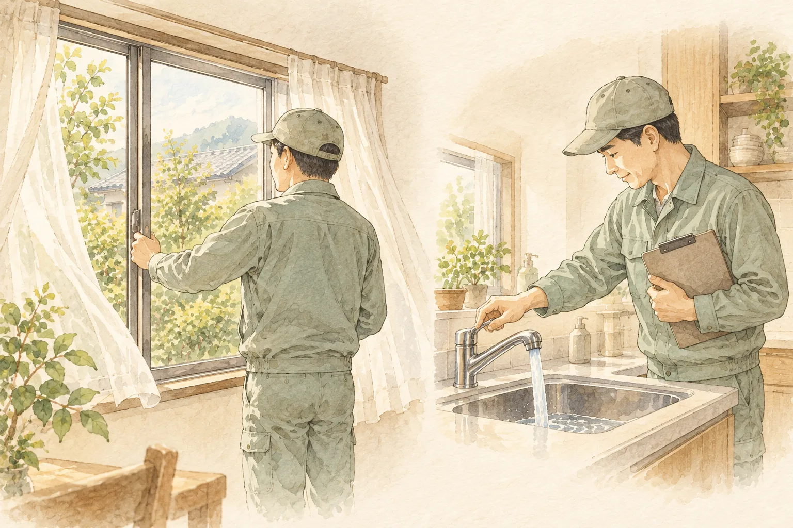
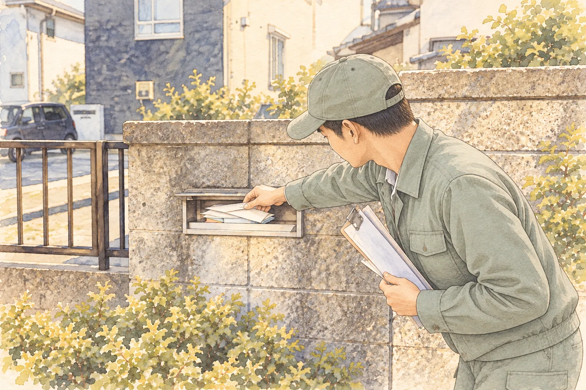
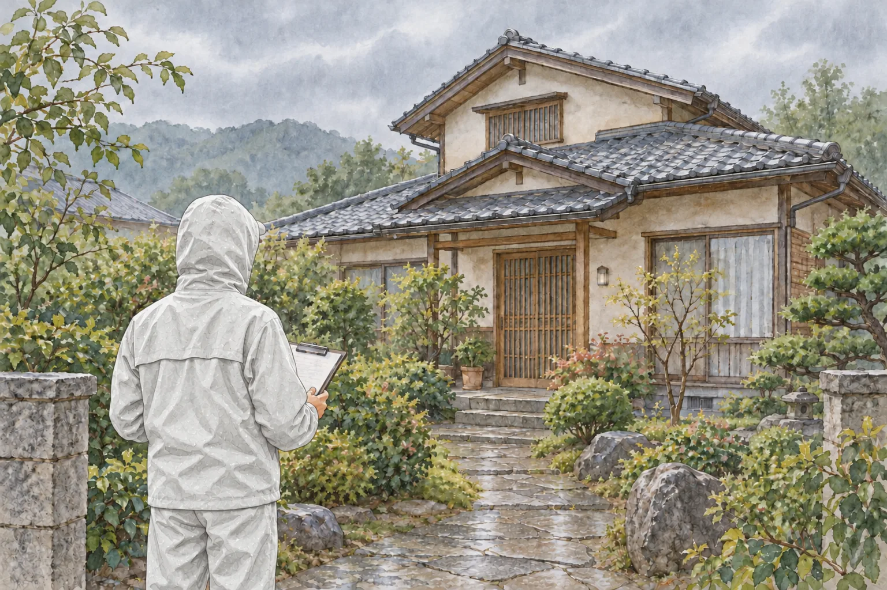
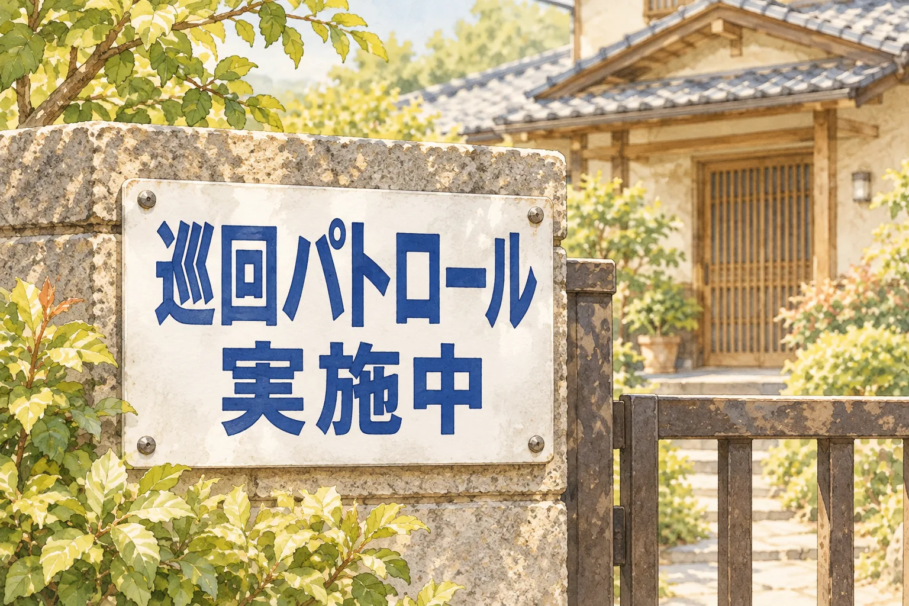

つぎの明かり
再び、明かりが灯るまで。
離れている家を定期的に訪ね、確認できた様子をお伝えします。
基本サービス 月額5,500円（税込）
月1回の外観巡回・写真報告など
家の未来を、考えている間も。
遠方でなかなか通えない実家。相続したばかりで、まだ使い道を決めていない家。定期的に様子を知りたい方のためのサービスです。
- 離れた実家へ、毎月様子を見に行くのが難しい
- 売却や活用を決めるまで、家の状態を確認しておきたい
- 自分では見に行けないときも、写真で様子を知りたい
- 近隣の方に迷惑をかけないよう、空き家の状態を確認しておきたい
基本サービス
月額 5,500円 （税込）
原則として月1回、安全に立ち入り、確認できる範囲で巡回します。
外から、家の様子を確認
外部から確認できる施錠状況、建物の外周、敷地内の雑草・ごみ、郵便受けの外観などを確認します。目で見て分かる異常の有無を確認するものです。
写真とともに、ご報告
確認できる範囲の外観を撮影し、巡回結果を報告します。報告方法は、メールなど事前に合意した方法です。隠れた不具合や将来の状態を保証するものではありません。
軽微な除草・ごみ整理について
巡回時間内に無理なく行える軽作業に限り、原則として45リットル袋1袋程度を上限の目安とします。敷地全体の草刈りや清掃、敷地外への持ち出し・処分は含みません。
室内に入って行う換気・通水は、下記の「室内見守り」オプションです。
必要に応じた、追加の見守り
以下は基本料金に含まれない追加サービスです。料金はすべて税込です。
挿絵はサービス内容のイメージです。

室内見守り
月額 ＋3,300円
室内の目視確認、換気、通水、簡易的な異常確認と室内写真。鍵をお預かりし、安全に入室できる範囲で行います。専門的な建物診断や設備の分解・修繕は含みません。

郵便物転送
月額 ＋1,100円
月1回、巡回時に回収できる通常の郵便物をまとめて指定先へ転送します。通常量・通常サイズの送料込み。開封はしません。書留・本人限定受取・荷物などは対象外です。

臨時巡回
5,500円／回
通常の巡回とは別に、ご依頼に応じて外観の現地確認・写真報告を行います。実施日時は緊急性と作業体制を踏まえて調整します。即時の駆けつけを約束するものではありません。

巡回表示看板
2,200円／枚
当社所定の巡回表示看板を設置します。原則として建物を傷つけない方法で行い、穴あけなどが必要な場合は事前に承諾をいただきます。
追加費用と専門作業について
振込手数料、通常料金に含まれない送料・梱包費、鍵返却時の郵送費などは別途ご負担いただきます。通常の取扱範囲を超える郵便物は、実施前に追加費用をご案内します。
草刈り・剪定・片付け・専門清掃・廃棄物処理・修繕などは、ご希望に応じて協力事業者をご紹介します。作業はお客様と紹介先との直接契約となり、料金も紹介先へ直接お支払いいただきます。
ご利用の前に、確認すること
対応できるかどうかは、物件の所在地・状態・安全性・権利関係などを確認してご案内します。まずは、お持ちの家についてお聞かせください。
- 巡回日は天候・交通・作業体制などを踏まえて当社が設定します。個別の合意がない場合、日時の指定はできません。
- 安全に立ち入れない場所や、目視・撮影できない箇所は確認できません。
- 異常を確認した場合は、確認できた事実や必要と考えられる対応をご連絡します。
- 常時監視や警備、専門的な建物診断ではありません。盗難・災害・劣化などの発生を防ぐことを保証するサービスではありません。
ご利用までの流れ
ご相談
物件の所在地や状態、ご希望をお聞かせください。
内容・条件の確認
対応可否、サービスの範囲、料金などをご案内します。
見守り開始
必要な準備を整え、合意した開始日から巡回・報告を行います。
お支払い・契約期間
お支払いは銀行振込です。月額料金は当月分を当月中に請求し、当月末日までにお支払いいただきます。臨時巡回・看板設置などは実施後に請求し、請求書発行日から7日以内のお支払いです。
契約期間は1年間で、満了日の1か月前までに更新しない旨の通知がなければ1年間更新されます。途中で終了する場合は、希望月の前月末日までにご連絡ください。解約金はありませんが、終了月の料金は全額発生します。月途中の開始・終了も、原則として日割計算はありません。
開始日は利用契約書兼申込書に定めます。記載がない場合は、契約成立月の翌月1日を標準に、準備状況を踏まえて合意した日から開始します。個別の合意がある場合は、その条件をご確認ください。
よくある質問
まずは、家の今をお聞かせください。
ご相談は無料です。
対応できるか、どこまで頼めるか。確認してからご検討いただけます。
フォームの「つぎの明かり（空き家の見守り）」をお選びください。
物件の所在地や、ご希望の見守り内容をお聞かせください。
詳しい利用条件
お申し込み前に、利用規約・料金・お支払いなどの条件をご確認ください。サービス内容や料金は、利用契約書兼申込書・料金表などとあわせてご案内します。
当社担当者の承諾通知がお客様に届いた時点で契約が成立します。ただし、当社が事前にサービス内容・料金・利用条件を確定し、申込みにより契約が成立する旨をご案内した場合は、Web上でのサービス申込みを当社が受信した時点、または対面でサービス申込書を当社担当者が受け取った時点で契約が成立します。
なお、お問い合わせフォームの送信のみでは契約は成立しません。